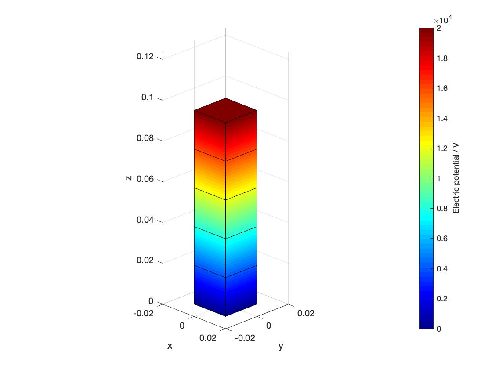
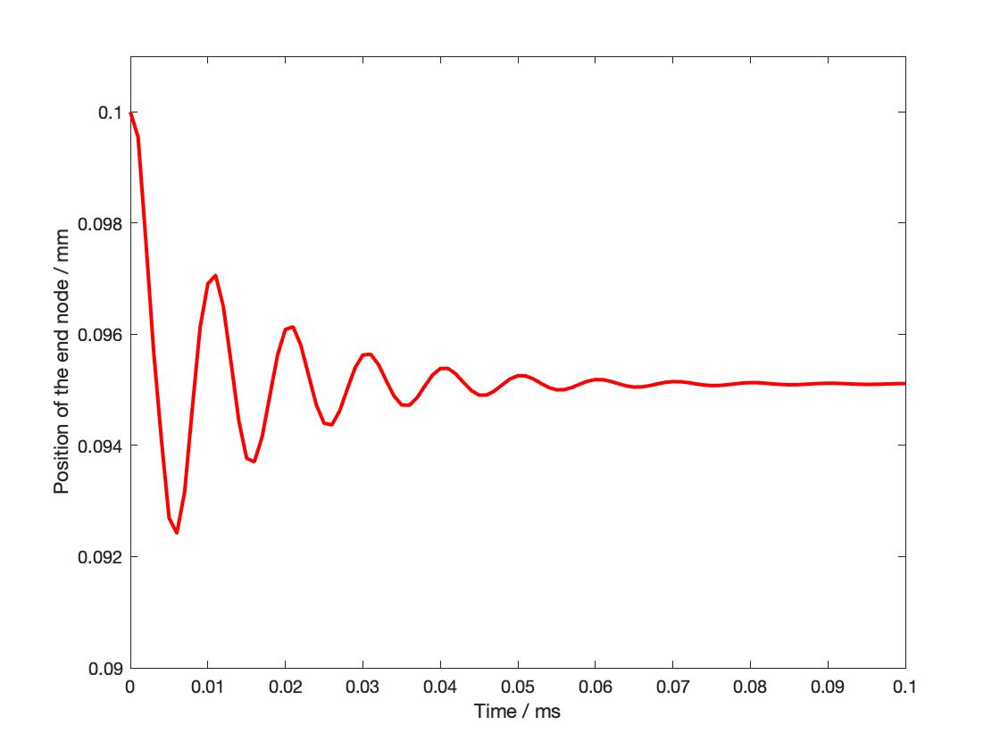

Example¶
Problem description¶
In the numerical example, a straight beam with length \(L\) and squared cross section \(b \times b\) is considered. The beam is composed of stacked DEA cells, where each DEA cell is discretized with finite elements. The beam is totally fixed at the bottom and the electrical boundary conditions are imposed on the beam nodes, as shown in the following figure. The contractions of DEA cells will lead to different deformations in the beam, including uniaxial contraction, shear, bending and torsion.
Parameter setting¶
The types of boundary conditions are set in src/a.ini as:
# boundary conditions: 'end' (contraction) / 'torsion' / 'shear' / 'bending'
param.eboun = 'end';
The value of electric potential in the boundary condition is set in src/integrator/update.m.
The time step size, beam size, mesh size are set as:
param.timestep = 1e-3; # in [ms], smaller time step may lead to badly scaled tangent matrix
param.totaltime = 0.1; # in [ms]
param.L = 0.1; # length of beam
param.b = 0.02; param.h = 0.02; # size of cross section
param.ncell = 1; # number of DEA cell
param.nec = 5; # number element in each DEA cell
Simulation results¶
The simulation is visualized by ploting the configurations or making a video:
plot_FE(res.Q(:,end), param, res, 'v'); # plot the final configuration
plot_FE_mov(res.Q, param); # make video of the simulation
By applying the “end” boundary condition, the contraction of the beam is obtained as following:
 